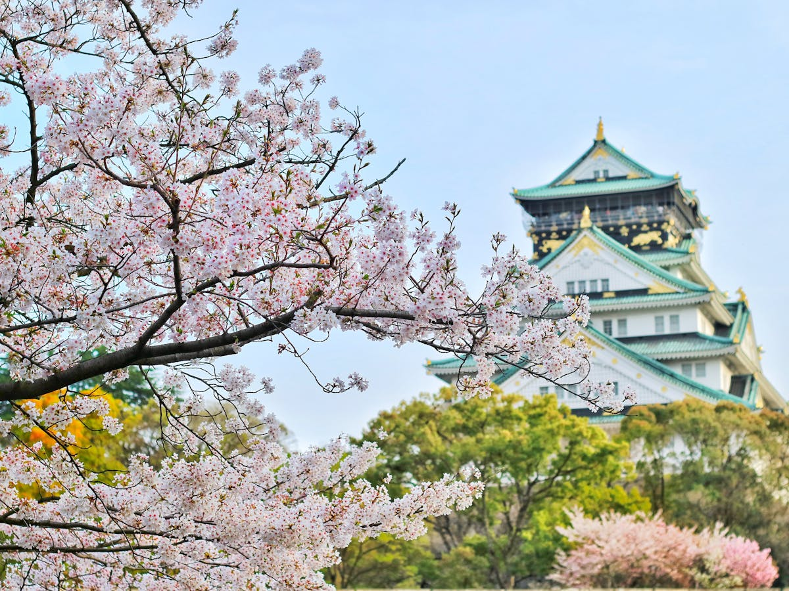

Destinations
Les 5 plus belles plages de Thaïlande à découvrir absolument
Des eaux turquoises de Maya Bay aux couchers de soleil de Koh Phangan, partez à la découverte des plus belles plages thaïlandaises pour des vacances de rêve.
Lire la suiteInspirations, conseils et histoires de voyageurs.
Des eaux turquoises de Maya Bay aux couchers de soleil de Koh Phangan, partez à la découverte des plus belles plages thaïlandaises pour des vacances de rêve.
Lire la suite Conseils
ConseilsOptimisez votre valise et voyagez plus sereinement grâce à ces conseils pratiques.
Lire la suite Culture
CulturePerdez-vous dans les ruelles colorées de la médina et rapportez les plus beaux souvenirs.
Lire la suiteItinéraire complet pour explorer les fjords en voiture, entre aurores boréales et villages pittoresques.
Lire la suite
CultureDes jardins zen du Kinkaku-ji aux ruelles de Gion, explorez les trésors spirituels de Kyoto.
Lire la suite Bons plans
Bons plansNos meilleures astuces pour économiser sur vos billets, hébergements et activités.
Lire la suite Visa & Formalités
Visa & FormalitésGuide complet des formalités d'entrée pour les destinations les plus prisées.
Lire la suite